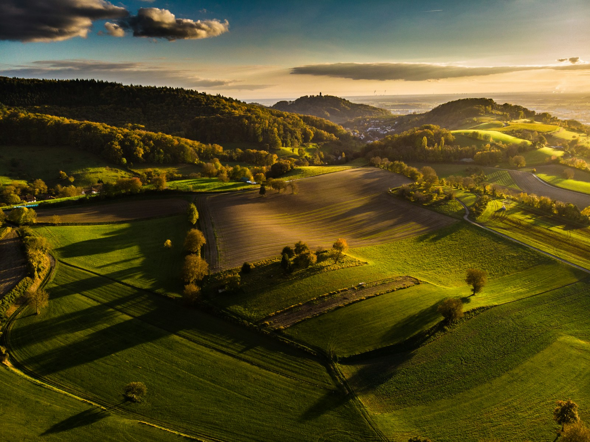

There is an honesty to the Pennquad Heritage that this critic finds deeply admirable. Fresh grain with the mild, clean character of a well-tended barn. Chamomile weaves through the aromatic profile like a country road through rolling fields; it is the scent of a working landscape that makes no pretension to grandeur and offers instead the more durable satisfactions of craftsmanship. A mild wood smoke note at the deepest register speaks of kiln-drying with care.
Approachable richness without compromise. The Pennquad Heritage commands its price point with a mid-weight body that is full enough to satisfy and light enough to sustain attention. A long, cream-inflected finish of toasted rye resolves with a pleasant persistence that invites, without compelling, the next evaluation. It is a cultivar of good character and consistent ambition.
The finest heritage-designation cultivar from the Pennsylvania Dutch Country appellation and one of the best values in the entire registry. The Pennquad Heritage earns the trust of the serious connoisseur through reliability and honest expression rather than occasional brilliance.
Pennquad was developed cooperatively by Pennsylvania State University and the USDA in 1984, specifically for the Lancaster-York growing corridor. The Heritage Designation program, established in 2009, recognises farms maintaining pre-industrial cultivation practices: horse-drawn planting, no synthetic inputs, stone-ground milling within the county boundaries. Current producers include the Eshleman, Stoltzfus, and Beiler family farms, all of whom have cultivated Pennquad across four generations.
| Vintage | Score | Notes |
|---|---|---|
| 2020 | 92 | Outstanding. The finest recent vintage for this designation. |
| 2019 | 90 | Excellent. Solid; slightly forward on the nose. |
| 2018 | 89 | Very Good. Reliable and honest; mid-weight. |
| 2017 | 87 | Very Good. Rain-shortened season; pleasant nonetheless. |
| 2016 | 91 | Excellent. A memorable vintage for the Heritage program. |
Pennquad Heritage is at its most eloquent alongside traditional Pennsylvania Dutch fare. Scrapple — made with proper commitment — is the canonical pairing, and a deeply satisfying one. A simple plate of sharp cheddar and apple butter requires no further elaboration. For those seeking more formal presentations, a buttermilk pancake of heritage buckwheat flour, topped with pure maple syrup and cultured cream, is a preparation of uncommon elegance.
Linen-wrapped paper tins with wax seals bearing the Lancaster County Heritage emblem. Store at 12-16°C, away from humidity. Optimal window: 3-8 months. This cultivar is designed for consumption rather than extended cellaring; its virtues are immediacy and freshness.